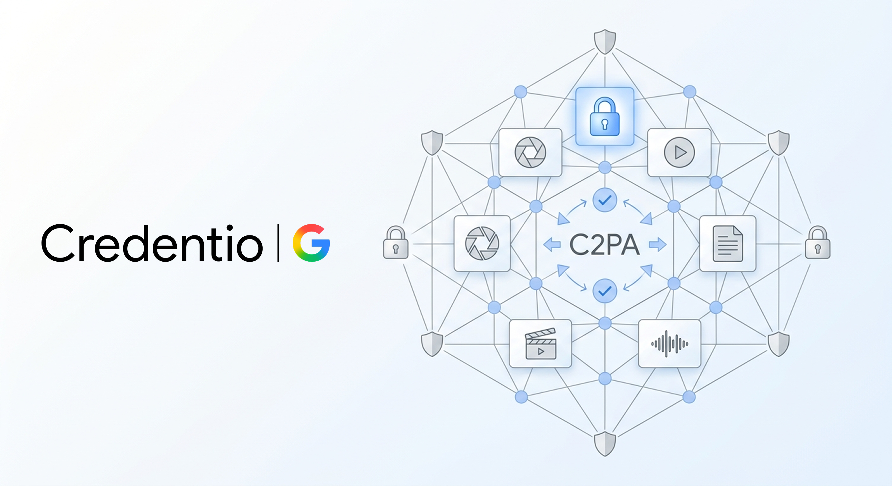

Executive Summary
구글이 2026년 8월 14일 제미나이로 만든 이미지와 영상, 음악에서 모서리에 붙던 반짝이 아이콘을 끌 수 있게 했습니다. 설정에 들어가 미디어 워터마크 항목을 내리면 그 뒤로 만드는 결과물에는 눈에 보이는 AI 표시가 남지 않습니다. 설정은 며칠에 걸쳐 배포되고, 한국에서는 유료 구독자만 이 항목을 볼 수 있습니다.
없어진 것은 표시가 아니라 표시를 읽는 방법입니다. 픽셀에 새겨지는 SynthID와 파일 메타데이터에 담기는 C2PA 콘텐츠 자격증명은 토글과 무관하게 계속 들어갑니다. 두 층은 눈으로 볼 수 없고 디코더나 파서를 거쳐야 읽힙니다. 같은 날 구글이 C2PA 검증용 오픈소스 라이브러리 Credentio를 공개한 것이 이 변화의 다른 쪽 면입니다.
확인할 수는 있습니다. 다만 그 확인은 읽을 도구를 가진 사람의 몫이 됩니다. 데이터 계보를 다뤄 온 쪽에는 익숙한 구조입니다. 메타데이터에 적힌 이력은 그것을 읽는 파이프라인이 있을 때에만 존재합니다.
주요 수치
보이지 않는 층은 이미 넓게 깔렸고, 그것을 읽는 쪽 사정은 이제 막 갖춰지는 중입니다.
출처: 구글 블로그, 구글 개발자 블로그, 디지털트렌즈
1,000억+
SynthID가 새겨진 이미지와 영상
2023년 도입 이후 누적, 오디오는 6만 년 분량이라고 구글이 5월에 밝혔습니다
5,000만 회
제미나이 앱의 AI 생성 확인 사용
이 기능을 쓰려면 파일을 앱에 올려 물어보는 행동이 먼저 필요합니다
0개
Credentio의 생성 기능
지금은 검증만 합니다. 자격증명을 만들어 파일에 심는 기능은 로드맵에 있습니다
3개국
유료 구독자만 토글을 쓰는 나라
한국과 인도, 베트남입니다. 무료 사용자에게는 시각 표시가 그대로 남습니다
구글이 끈 것과 남긴 것
발표는 8월 14일 금요일에 나왔습니다. 제미나이 담당 부사장 조시 우드워드가 X에 올린 글에 따르면 토글은 이미지 모델 나노 바나나, 영상 모델 옴니, 음악 모델 리리아에 적용됩니다. 설정을 켜고 끄는 자리는 제미나이 앱과 영상 편집 도구 플로우이고, 검색에서도 곧 쓸 수 있게 할 예정입니다. 며칠에 걸쳐 배포되며, 사용자는 설정에서 미디어 워터마크 항목을 찾아 표시를 켜거나 끄면 됩니다. 선택한 값은 그 뒤에 만드는 이미지와 영상, 음악에 그대로 적용됩니다.
구글이 내세운 명분은 균형입니다. 우드워드는 창의적 통제와 안전 사이에서 균형을 잡는 결정이라고 적었습니다. 시각 워터마크는 이제 선택이지만 비가시 SynthID와 C2PA 메타데이터는 투명성을 위해 계속 들어가므로 제미나이나 검색으로 AI 생성 여부를 여전히 확인할 수 있다는 말도 덧붙였습니다. 이 문장에 이번 변경의 전제가 다 들어 있습니다. 확인이 불가능해진 것은 아니고, 확인하는 방법이 달라졌을 뿐이라는 것입니다.
법이 요구한 것이 무엇이었는지를 보면 이 재량의 크기가 잡힙니다. EU AI Act 제50조는 8월 2일부터 생성형 AI 사업자에게 기계가 읽을 수 있는 형태의 AI 생성 표시를 요구합니다. 사람 눈에 보이는 아이콘을 얹으라는 조항이 아닙니다. 모서리의 반짝이 아이콘은 그 요구를 넘어 구글이 스스로 붙인 상품 선택이었고, 그래서 떼는 일도 구글의 재량 안에 있었습니다. 시각 표시를 따로 의무화한 나라만 예외입니다.
요청은 사용자 쪽에서 먼저 왔습니다. 몇 달 전 우드워드는 제미나이에서 가장 불편한 점이 무엇인지 물은 적이 있습니다. 그때 나노 바나나의 시각 워터마크를 없애 달라는 요구가 상위 열 개 안에 들었다고 기즈모도가 안드로이드 어소리티를 인용해 전했습니다. 이미지 생성 도구를 쓰는 쪽에서 가장 걸리는 것이 AI를 썼다는 눈에 보이는 흔적이었다는 뜻입니다.
비판은 그 지점에서 나옵니다. 엔가젯은 시각 워터마크가 존재한 이유 자체가 사람들에게 AI 콘텐츠를 빠르게 알아볼 방법을 주기 위해서였는데 이번 결정이 그 목적을 스스로 약하게 만든다고 지적했습니다. 남은 두 층으로도 확인은 되지만, 챗봇에 물어보거나 검증 포털에 파일을 올리는 행동이 먼저 필요합니다. 표시를 보는 일과 표시를 조회하는 일 사이에는 그만큼의 문턱이 있습니다.

픽셀에 새긴 신호는 남고 메타데이터는 벗겨진다
남은 두 층은 성격이 다릅니다. SynthID는 3년 전 구글이 내놓은 워터마킹 기술로, 사람이 알아챌 수 없는 신호를 이미지와 영상의 픽셀, 오디오의 파형에 직접 심습니다. 구글은 지난 5월 이 기술이 이미지와 영상 1,000억 개 이상, 오디오 6만 년 분량에 들어갔다고 밝혔습니다. C2PA 콘텐츠 자격증명은 다른 방식입니다. 무엇으로 언제 만들었고 이후 어떻게 편집했는지를 서명된 기록으로 만들어 파일 메타데이터에 붙입니다. 앞쪽은 콘텐츠 자체에 새기는 신호이고, 뒤쪽은 파일에 동봉하는 이력서입니다.
견고성도 다릅니다. 기즈모도는 시각 워터마크를 지우는 데는 잘라 내거나 가리는 정도의 수고면 충분하고, 메타데이터인 C2PA도 지우기 쉬운 데다 대부분의 소셜 미디어가 업로드 과정에서 메타데이터의 일부 또는 전부를 벗겨 낸다고 적었습니다. 허위 정보를 퍼뜨리려는 쪽이 따로 손을 쓸 필요도 없다는 뜻입니다. SynthID는 상대적으로 질깁니다. 픽셀에 인코딩되기 때문에 자르고 크기를 줄이고 화질을 떨어뜨려도 남도록 설계됐고, 아스 테크니카의 실험에서도 그런 처리를 거듭하면 탐지가 어려워지기는 하지만 그쯤이면 이미지가 이미 쓸모없이 뭉개진 뒤였습니다. 다만 이 기술이 적대적 공격까지 견디도록 설계된 것은 아니고, 우회를 표방하는 상용 서비스와 공개 도구가 이미 나와 있다고 같은 기사가 전했습니다.
세 층을 나란히 놓으면 이번 변경이 무엇을 옮겼는지가 분명해집니다. 사라진 것은 가장 약하지만 가장 넓게 읽히던 층입니다.
같은 날 나온 것은 검증하는 쪽 도구였다
구글은 토글을 발표한 날 Credentio를 오픈소스로 공개했습니다. C2PA 콘텐츠 자격증명을 다루는 C++ 라이브러리이고, 스펙 2.2와 2.4 버전을 지원합니다. 하는 일은 파일에 담긴 매니페스트와 어서션, 전자 서명과 클레임 구조를 깊이 들여다보고 검증 결과와 무결성 오류를 짚어 주는 것입니다. 공식 C2PA 신뢰 목록을 그대로 쓸 수도 있고 직접 만든 목록을 넣을 수도 있습니다. 구글은 공개 배경을 AI 투명성 규제와 미디어 프로버넌스 표준이 전 세계에서 시행되기 시작한 상황이라고 설명했습니다.

설계에서 눈에 띄는 대목은 검증을 전부 로컬에서 끝낸다는 점입니다. 파일을 클라우드로 보내지 않기 때문에 대역폭이 들지 않고 지연도 적으며, 미디어 내용이 밖으로 나가지 않습니다. 몇 기가바이트짜리 영상이나 고해상도 이미지를 다룰 때 메모리를 적게 쓰도록 만들었다는 설명도 함께 나옵니다. 이 코드는 새로 쓴 것이 아니라 40개 가까운 구글 제품이 수백억 개 자산을 처리하는 데 이미 쓰고 있던 것입니다. 저장소는 mediaprovenance.googlesource.com에 열려 있습니다.
지금 할 수 있는 일은 검증뿐입니다. 자격증명을 직접 만들어 파일에 심는 기능은 아직 없고 구글은 이를 로드맵에 올려 두었습니다. 검증을 먼저 연 순서가 이번 정책 변경과 맞물립니다. 시각 표시를 선택으로 돌리면 확인의 부담은 만드는 쪽에서 읽는 쪽 소프트웨어로 넘어갑니다. 그 소프트웨어가 앱과 서버 파이프라인 안에 들어가 있지 않으면, 파일에 담긴 이력은 있어도 아무도 보지 않는 기록으로 남습니다.
구글은 5월 발표 때도 다른 회사가 만든 AI 콘텐츠까지 탐지하는 개발자용 AI 콘텐츠 탐지 API를 클라우드에서 준비하고 있다고 밝힌 바 있습니다. 그때는 신뢰할 수 있는 파트너 그룹과 먼저 시작한다고 했습니다. 검증 도구를 회사 밖으로 계속 밀어내는 흐름 위에 이번 라이브러리 공개가 놓여 있습니다.
한국에서는 요금제가 표시 여부를 가른다
토글은 어디서나 똑같이 열리지 않습니다. 우드워드는 법으로 표시 유지를 요구하는 나라를 빼고 배포한다고 적었습니다. 엔가젯은 그 대상에 EU가 포함된다고 전했습니다. EU가 최근 내놓은 AI 투명성 규정이 실제와 구분하기 어려운 딥페이크에 시각 워터마크를 의무화했기 때문입니다. 한국과 인도, 베트남에서는 사정이 또 다릅니다. 디지털트렌즈에 따르면 이 세 나라에서는 유료 AI 울트라 구독자만 토글을 쓸 수 있고, 나머지 사용자의 결과물에는 시각 워터마크가 자동으로 유지됩니다. 회사와 학교 계정에는 설정 자체가 제공되지 않습니다.
| 사용자 | 토글 | 시각 표시의 기본 상태 |
|---|---|---|
| EU 등 법으로 요구하는 나라 | 제공되지 않습니다 | 항상 남습니다 |
| 한국·인도·베트남의 유료 구독자 | AI 울트라 구독 시 사용 가능합니다 | 끄면 사라집니다 |
| 한국·인도·베트남의 무료 사용자 | 제공되지 않습니다 | 항상 남습니다 |
| 회사·학교 계정 | 제공되지 않습니다 | 항상 남습니다 |
| 그 밖의 지역 | 모든 사용자가 쓸 수 있습니다 | 끄면 사라집니다 |
정리: 페블러스. 테크크런치·엔가젯·디지털트렌즈 보도를 표로 재구성했습니다.
국내 사용자에게 이 표가 뜻하는 바는 단순합니다. 대부분의 사람은 당분간 눈으로 보이는 표시를 계속 보게 됩니다. 엔가젯은 한국도 올해 초 비슷한 규정을 마련했다고 덧붙였습니다. 국내에서는 AI 기본법이 2026년 1월 시행되면서 생성형 AI 결과물에 AI로 만들었다는 사실을 표시하도록 하는 의무가 들어왔습니다. 다만 구글이 한국에 적용한 것은 법적 차단이 아니라 요금제에 따른 구분입니다. 같은 나라 안에서 유료 사용자가 만든 결과물과 무료 사용자가 만든 결과물이 서로 다른 표시 규칙을 갖게 됩니다.
이 지도가 하필 8월에 그려진 데에는 날짜가 있습니다. EU AI Act 제50조가 8월 2일 시행되면서 생성형 AI 사업자에게 기계가 읽을 수 있는 표시 의무가 걸렸고, 위반에는 최대 1,500만 유로 또는 전 세계 매출의 3% 가운데 큰 금액이 벌금으로 따라붙습니다. 그 뒤 열흘 남짓 사이에 두 회사가 각각 움직였습니다.
같은 주에 앤트로픽은 반대 방향으로 움직였습니다. 8월 11일 클로드가 만든 텍스트와 파일에 C2PA 기반의 비가시 워터마크를 넣기로 했고, 이 역시 EU 규정에 맞추기 위한 조치입니다. 앤트로픽 쪽에는 끄는 선택지가 아예 없습니다. 두 회사가 사용자에게 준 재량은 정반대지만 기록을 남기는 자리는 같습니다. 둘 다 사람 눈으로는 읽을 수 없는 층입니다.
우리 수집 경로는 그 이력을 읽고 있는가
데이터를 다루는 쪽에서 보면 이 구조는 처음 보는 것이 아닙니다. 테이블에 리니지 정보가 붙어 있다는 사실과 우리 파이프라인이 그 정보를 실제로 읽는다는 사실은 늘 별개였습니다. 컬럼 설명이 카탈로그에 적혀 있어도 적재 코드가 그것을 참조하지 않으면 없는 것과 같고, 소스 시스템이 갱신 시각을 보내 주어도 수집 단계에서 버리면 그 시각은 어디에도 남지 않습니다. 이번에 C2PA에 벌어진 일이 같은 모양입니다. 파일에는 이력이 담겨 있고, 그 이력을 읽는 코드가 있는 곳에서만 이력이 존재합니다.
이미지가 들어오는 저장소를 가진 조직이라면 물어볼 것이 세 가지 있습니다.
- 수집 경로 가운데 C2PA 매니페스트를 실제로 파싱해서 기록하는 경로가 몇 개입니까. 크롤러와 업로드 폼, 협력사 전송, 사내 생성 도구를 각각 세어 보면 대개 답은 영에 가깝습니다.
- 이력이 벗겨지는 지점이 어디입니까. 소셜 미디어 업로드만이 아니라 사내 리사이즈, 포맷 변환, CDN 재인코딩에서도 메타데이터는 조용히 사라집니다.
- 표시가 없는 파일을 무엇으로 취급하고 있습니까. 표시가 없다는 사실이 사람이 만들었다는 뜻은 아닙니다. 구글도 앤트로픽도 포맷 변환이나 재저장을 거치면 표시가 남지 않을 수 있다고 밝혀 두었습니다.
세 질문에 답하려면 파일을 직접 열어 읽어 보는 수밖에 없고, 그 일을 하는 코드는 마침 같은 날 공개됐습니다. 검증 라이브러리가 나왔다는 사실보다 그것을 수집 경로 어디에 꽂을지 정하는 일이 남은 몫입니다.
워터마크를 개별 파일 판정이 아니라 생태계 계측 지표로 다루자는 논의는 학계에서도, 개별 탐지 정확도보다 출처 기록 쪽으로 무게를 옮기자는 논의는 업계에서도 이미 진행 중이었습니다. 이번 사건은 그 논의가 소비자용 이미지와 영상에서 실제로 벌어진 사례입니다.
Editor's Note: 페블러스가 데이터 품질 현장에서 자주 마주치는 상황은 계보 정보가 없는 상태가 아니라, 계보가 기록되어 있는데 아무도 읽지 않는 상태입니다. 8월 14일 이후로 이미지와 영상도 같은 자리에 들어왔습니다. 표시를 붙이라고 요구하는 일과 표시를 읽는 경로를 만드는 일은 다른 작업이고, 두 번째 작업은 대체로 아직 시작되지 않았습니다.
참고문헌
공식 문서
- 1.Google Developers Blog. (2026). "Introducing Credentio: Open Source C++ Library for C2PA Content Credentials from Google."
- 2.Richardson, L., Kohli, P. (2026). "Making It Easier to Understand How Content Was Created and Edited." Google Blog.
- 3.EU AI Act. "Article 50: Transparency Obligations for Providers and Deployers."
업계·보도
- 4.Mehta, I. (2026). "Google Will Now Allow Users to Remove Visible Watermark From Its AI Generations." TechCrunch.
- 5.Engadget. (2026). "Google Will Now Allow Users to Remove Visible Watermarks From AI Content."
- 6.Digital Trends. (2026). "Google's Gemini App Adds a Toggle to Disable AI Watermarks, With Some Exceptions."
- 7.Gizmodo. (2026). "Google Opens the Gates of AI Slop Hell."
- 8.TechCrunch. (2026). "Anthropic Says It Will Watermark Text Generated by Its AI Models."